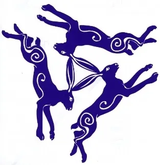

Symbol Grimoire
 Triskele
Triskele
A triskele is a rotational motif built from a single form repeated three times around a central point, giving a turning, wheel-like figure. It turns up across Celtic and Buddhist work alike, carved into stone, worked in metal, and painted into manuscripts.
Forms
The repeated element changes from one rendering to the next. Common versions use three running legs, three curling spirals, three teardrops, or three fish set head to tail. A celebrated variant known as the Three Hares arranges three leaping hares in a ring so that each animal appears to share its ears with the next, and it too is found in both Celtic and Buddhist settings.
The Three Hares and the Moon
The hare version has invited endless speculation. Because the hare is active at night and has long been read as a lunar creature, its outline traced in the shadows and ridges of the Moon's surface, the motif gathers strong associations with the Goddess and her cycles.

Meaning
At its core the triskele honors the importance of the number three and the idea of unceasing motion and return. Its spinning, radiating geometry also ties it to the Sun, placing it alongside the swastika in the wider family of solar signs.